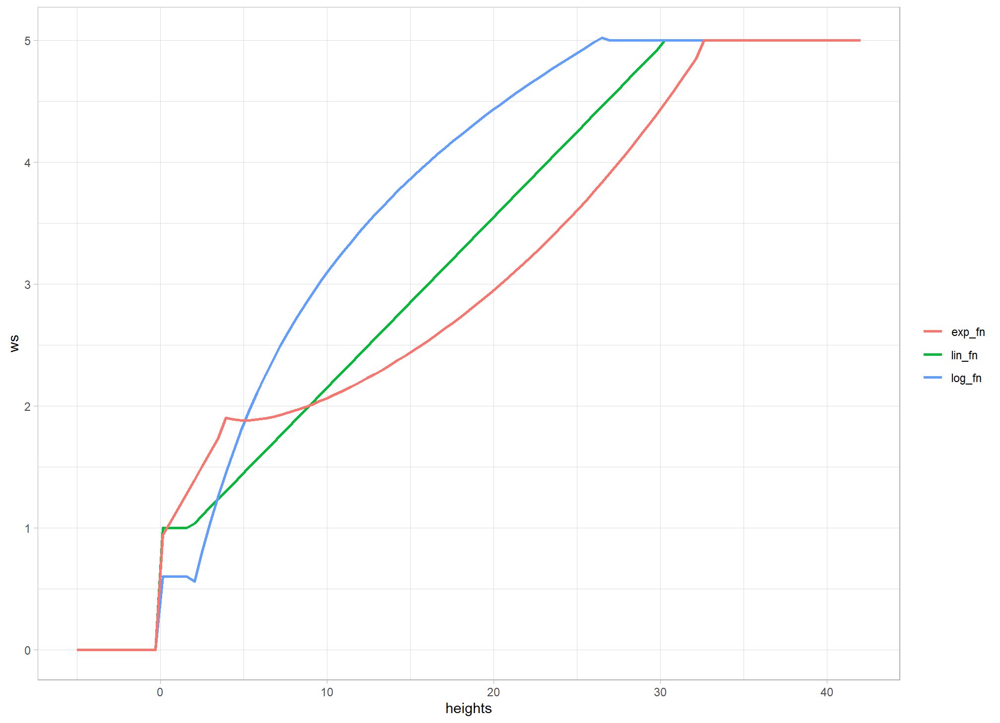
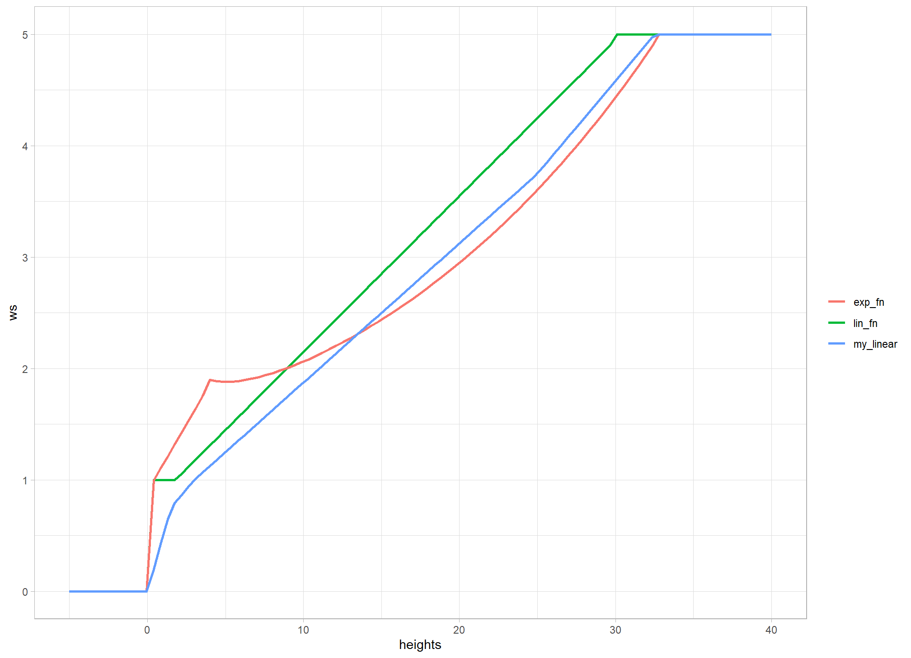
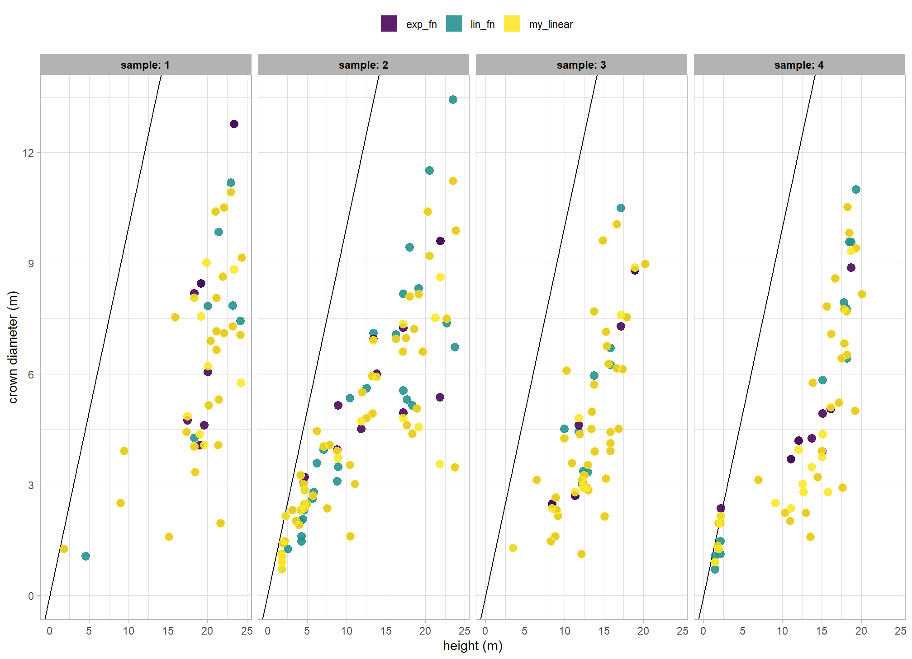
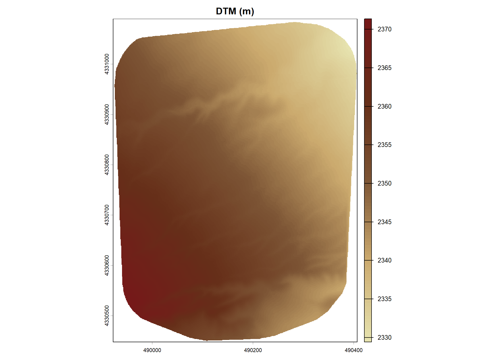
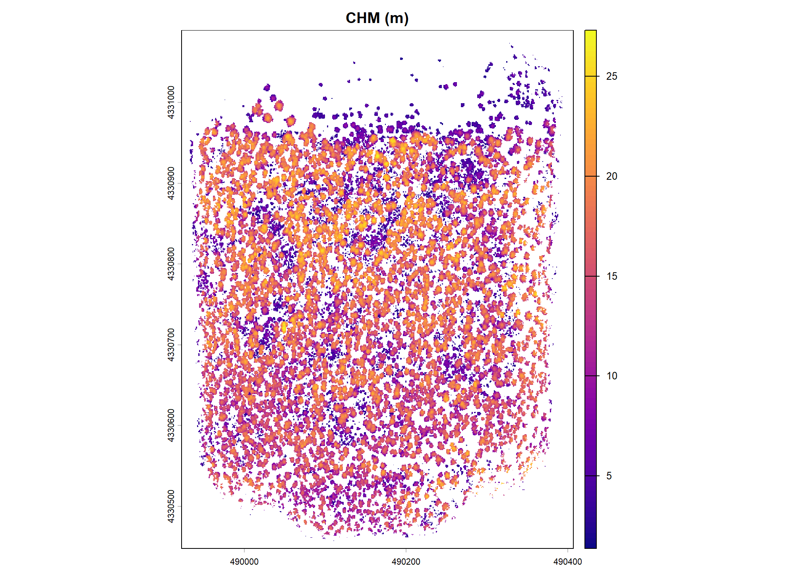
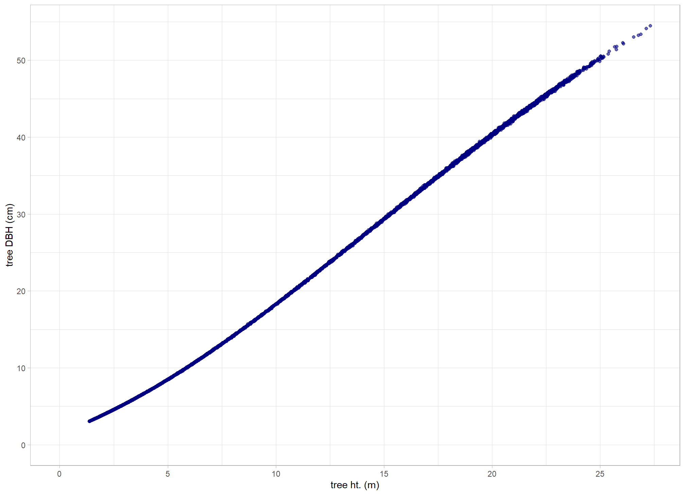
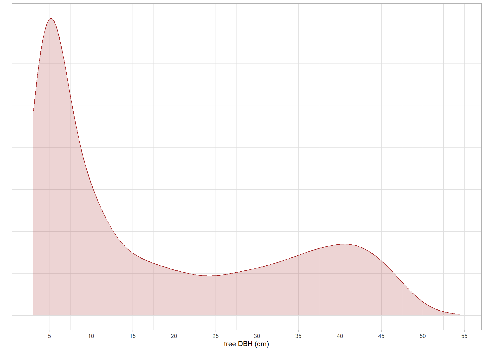
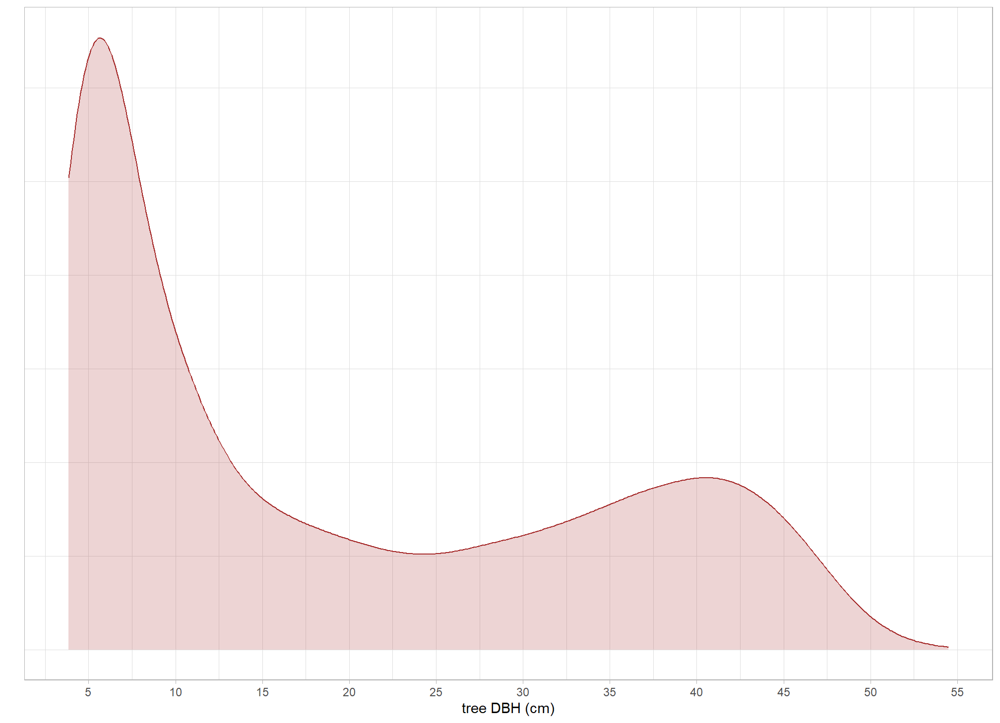
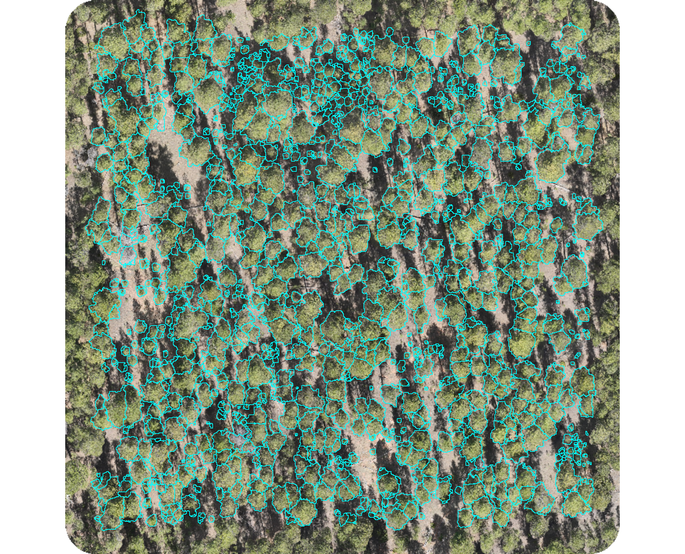
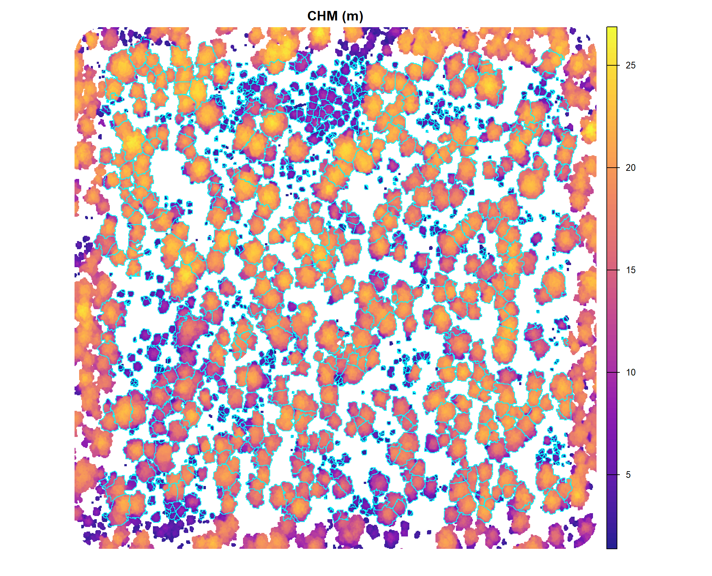

2 Primer on Point Cloud Processing
We’ll start with an overview of the point cloud processing workflow using a single, representative example dataset from the Manitou Experimental Forest study site. Before comparing performance across the entire study, this primer walks through the cloud2trees package pipeline utilized to process the raw point cloud to generate the spatial forest inventory for each of the six unique flight configurations tested. Within this section, we review the example data to define the window function used in the ITD algorithm implemented by cloud2trees and describe the outputs from cloud2trees which we use in the accuracy evaluation on the different UAS flight plan settings.
load the standard libraries we use to do work
# bread-and-butter
library(tidyverse) # the tidyverse
library(viridis) # viridis colors
library(harrypotter) # hp colors
library(palettetown) # poke colors
library(RColorBrewer) # brewer colors
library(scales) # work with number and plot scales
library(latex2exp)
# visualization
library(mapview) # interactive html maps
library(kableExtra) # tables
library(patchwork) # combine plots
library(ggnewscale) # new scale
library(ggrepel) # repel labels
# spatial analysis
library(terra) # raster
library(sf) # simple features
library(lidR) # lidR
library(cloud2trees) # cloud2trees2.1 Data
Though not necessary for cloud2trees data processing, let’s quickly check out the location and structure of the data we have
we got a folder of point cloud data: N1_400AGL_20MPH_TFOFF … let’s see what’s in that folder
# directory with the downloaded .las|.laz files
point_cld_folder <- "../data/N1_400AGL_20MPH_TFOFF"
# is there data?
list.files(point_cld_folder, pattern = ".*\\.(laz|las)$") %>% length()## [1] 1## [1] "cloud0.las"again, this is not necessary for cloud2trees data processing but we can use lidR to read the point cloud folder as a catalog which doesn’t read in the actual points but just the point cloud header data which includes information on things like the spatial location of the data, the point density, and other point attributes
# read folder as LAScatalog
ctg_temp <- lidR::readLAScatalog(point_cld_folder)
# what information do we get about the point cloud?
ctg_temp## class : LAScatalog (v1.2 format 3)
## extent : 489922, 490406.8, 4330448, 4331090 (xmin, xmax, ymin, ymax)
## coord. ref. : WGS 84 / UTM zone 13N
## area : 311012.7 m²
## points : 53.71 million points
## type : airborne
## density : 172.7 points/m²
## density : 140.2 pulses/m²
## num. files : 1that’s a lot of points…can an ordinary or sub-optimal laptop handle it? we’ll find out.
let’s look at the point cloud extent on a map to orient ourselves in space
ctg_temp %>%
cloud2trees:::check_las_ctg_empty() %>%
purrr::pluck("data") %>%
mapview::mapview(popup = F, layer.name = "point cloud tile")i told you that we didn’t need to do any of that for cloud2trees data processing and to prove it, we’ll remove the ctg_temp object from our session
## used (Mb) gc trigger (Mb) max used (Mb)
## Ncells 4022836 214.9 7506351 400.9 5214757 278.5
## Vcells 5961794 45.5 12255594 93.6 8388606 64.02.2 ITD Tuning
from the cloud2trees readme:
The
itd_tuning()function is used to visually assess tree crown delineation results from different window size functions used for the detection of individual trees.itd_tuning()allows users to test different window size functions on a sample of data to determine which function is most suitable for the area being analyzed. The preferred function can then be used in thewsparameter inraster2trees()andcloud2trees().
let’s take this cloud2trees::itd_tuning() function for a spin with the parameter settings chm_res_m = 0.25 since we plan on processing the entire data extent using a 0.25 m CHM resolution, n_samples = 4 to get four 0.1 ha sample areas on which to visually assess the window functions, and min_height = 1.37 to require that any potential tree has a height of at least 1.37 m to be considered a “tree”
itd_tuning_ans <-
cloud2trees::itd_tuning(
input_las_dir = "../data/N1_400AGL_20MPH_TFOFF/"
, n_samples = 4
, min_height = 1.37
, chm_res_m = 0.25
)what does cloud2trees::itd_tuning() give us?
## [1] "plot_samples" "ws_fn_list" "plot_sample_summary"
## [4] "crowns"it’s a named list. let’s check out the plot_* results
itd_tuning_ans$plot_samples
# write the file to the disk for posterity
ggplot2::ggsave(filename = "../data/itd_tuning_plot_samples1.jpg", height = 11, width = 8, dpi = "print")
the most noticeable difference between the window functions is with the segmentation of tall areas of the CHM using the log_fn compared to the other two. this function appears to not be separating tall trees appropriately: it is under-segmenting these areas resulting in too few tall trees. this under-segmentation by the log_fn can be seen most clearly in the top-left tall tree group of sample 1 and the top-left tall tree group of sample 4
comparing the lin_fn (linear function) and exp_fn (exponential function) shows that both functions result in similar segmentation results for taller trees but the primary differences appear for shorter trees. The difference in short-tree segmentation between these two functions is most evident in sample 2 where the lin_fn predicts many more small trees than the exp_fn. This appears to be an over-segmentation (too many trees) by the lin_fn for shorter trees which is perhaps most clear in the area just above the very center of sample 2
let’s check out the resulting tree distribution of the different window functions over these sample areas
itd_tuning_ans$plot_sample_summary
# write the file to the disk for posterity
ggplot2::ggsave(filename = "../data/itd_tuning_plot_sample_summary1.jpg", height = 11, width = 8, dpi = "print")
these results confirm what we identified about the log_fn compared to the other two: that it under-segments taller trees. predicting too few tall trees by not separating multiple tree crowns has the effect of producing tall trees with very wide crowns. this result is shown by the outlier yellow points in the RHS plots where the crown is predicted to be wider than the tree is tall (unlikely for this forest type)
let’s look at the default window function named lin_fn (i.e. linear function) from cloud2trees to see how we might adjust it to obtain different tree segmentation results
## function (x)
## {
## y <- dplyr::case_when(is.na(x) ~ 0.001, x < 0 ~ 0.001, x <
## 2 ~ 1, x > 30 ~ 5, TRUE ~ 0.75 + (x * 0.14))
## return(y)
## }
## <bytecode: 0x000001d37f650f28>
## <environment: 0x000001d37f64d1a8>it’s a function defining the window size (called y) based on the CHM height (called x)
we can plot the two functions that we did not rule out based on the first set of cloud2trees::itd_tuning() samples
# plot the ws fn
ggplot2::ggplot() +
ggplot2::geom_function(fun = itd_tuning_ans$ws_fn_list$lin_fn, aes(color = "lin_fn"), lwd = 1) +
ggplot2::geom_function(fun = itd_tuning_ans$ws_fn_list$log_fn, aes(color = "log_fn"), lwd = 1) +
ggplot2::geom_function(fun = itd_tuning_ans$ws_fn_list$exp_fn, aes(color = "exp_fn"), lwd = 1) +
ggplot2::xlim(-5,42) +
ggplot2::labs(x = "heights", y = "ws", color = "") +
ggplot2::theme_light()
the lin_fn (linear function) and exp_fn (exponential function) result in similar window sizes for higher CHM values but the exp_fn expands the window size for shorter areas compared to the lin_fn.
let’s make a custom linear function that expands the search window for shorter trees but keeps roughly the same window size for taller trees between 15-25 m (we don’t expect many trees above this in our study area). looking at the plot of the two functions, we want to make a new, piecewise linear function that passes through (4,1.5) which is a point between the exp_fn and lin_fn in the 2-7.5 x-range
# define a custom function
my_linear <- function(x){
y <- dplyr::case_when(
is.na(x) ~ 0.001
, x < 0.01 ~ 0.001
# next piece:
# we want it to pass through ~ (1.5,0.75)
# m = (y2-y1)/(x2-x1) >> m = (0.75-0.001)/(1.5-0.01) = 0.5026846
# b = y-(m*x) >> b = 0.001-(0.5026846*0.01) = -0.004026846
, x < 1.5 ~ -0.004026846 + x*0.5026846
# next piece:
# at x=1.5, first segment y = -0.004026846+1.5*0.5026846 = 0.75 >> (1.5,0.75)
# connect to (3.0,1.0)
# m = (1.0-0.75)/(3.0-1.5) = 0.1666667
# b = 0.75-(0.1666667*1.5) = 0.4999999
, x < 3.0 ~ 0.4999999 + x*0.1666667
# next piece:
# at x=3.0, first segment y = 0.4999999+3.0*0.1666667 = 1.0 >> (3.0,1.0)
# connect to (25,3.75)
# m = (3.75-1.0)/(25-3.0) = 0.125
# b = 1.0-(0.125*3.0) = 0.625
, x < 25 ~ 0.625 + x*0.125
# upper limit starts at (32.5,5)
, x > 32.5 ~ 5
# next piece:
# connect to (32.5,5)
# m = (5-3.75)/(32.5-25) = 0.1666667
# b = 3.75-(0.1666667*25) = -0.4166675
, T ~ -0.4166675 + x*0.1666667
)
return(y)
}
# my_linearlet’s visualize these functions we’ll use for the second cloud2trees::itd_tuning() sampling
ggplot2::ggplot() +
ggplot2::geom_function(fun = itd_tuning_ans$ws_fn_list$lin_fn, aes(color = "lin_fn"), lwd = 1) +
ggplot2::geom_function(fun = itd_tuning_ans$ws_fn_list$exp_fn, aes(color = "exp_fn"), lwd = 1) +
ggplot2::geom_function(fun = my_linear, aes(color = "my_linear"), lwd = 1) +
ggplot2::xlim(-5,40) +
ggplot2::labs(x = "heights", y = "ws", color = "") +
ggplot2::theme_light()
re-run tuning with new function
# let's put these in a list to test with the best default function we saved from above
my_fn_list <- list(
lin_fn = cloud2trees::itd_ws_functions()[["lin_fn"]]
, exp_fn = cloud2trees::itd_ws_functions()[["exp_fn"]]
, my_linear = my_linear
)
itd_tuning_ans2 <-
cloud2trees::itd_tuning(
input_las_dir = "../data/N1_400AGL_20MPH_TFOFF/"
, ws_fn_list = my_fn_list
, n_samples = 4
, min_height = 1.37
, chm_res_m = 0.25
)let’s check out the plot_* results
itd_tuning_ans2$plot_samples
# write the file to the disk for posterity
ggplot2::ggsave(filename = "../data/itd_tuning_plot_samples2.jpg", height = 11, width = 8, dpi = "print")
Our custom my_linear function appears to do a good job striking a balance between the default lin_fn which tended to undersegment taller trees an the exp_fn which tended to undersegment shorter trees. The custom function and the exp_fn yield similar tree segmentation results for sample 1 which is what we expected since that area consists primarily of taller trees and the biggest change we made to my_linear function was to limit the search window at the taller range and expand the search window for shorter trees so that less were detected compared to the default lin_fn. One notable difference with the exp_fn (exponential function) in sample 1 is in the lower left corner where the custom function limited crown sprawl for one of the taller objects in the scene an yielded more realistic crown shapes. Our custom my_linear function yields fewer small trees than the default lin_fn (but more than the exp_fn) since we allowed a larger window size at lower portions of the CHM with this effect most clear for the short trees (purple CHM regions) on sample 2.
let’s check out the resulting tree distribution of the different window functions over these sample areas
itd_tuning_ans2$plot_sample_summary
# write the file to the disk for posterity
ggplot2::ggsave(filename = "../data/itd_tuning_plot_sample_summary2.jpg", height = 11, width = 8, dpi = "print")
# save the crowns too?
itd_tuning_ans2$crowns %>% sf::st_write(dsn = "../data/itd_tuning_crowns.gpkg", quiet = T, append = F) 
let’s check out the crown polygon data we got from our second itd_tuining() iteration
## Rows: 492
## Columns: 9
## $ sample_number <int> 1, 1, 1, 1, 1, 1, 1, 1, 1, 1, 1, 1, 1, 1, 1, 1, 1, 1,…
## $ ws_fn <chr> "lin_fn", "lin_fn", "lin_fn", "lin_fn", "lin_fn", "li…
## $ treeID <chr> "1_490149.4_4330784.4", "2_490163.9_4330783.1", "3_49…
## $ tree_height_m <dbl> 21.6631, 21.3840, 24.3616, 21.9198, 20.9949, 24.1610,…
## $ tree_x <dbl> 490149.4, 490163.9, 490154.6, 490179.9, 490169.9, 490…
## $ tree_y <dbl> 4330784, 4330783, 4330782, 4330782, 4330781, 4330779,…
## $ crown_area_m2 <dbl> 1.8750, 35.5625, 40.3750, 27.2500, 49.6875, 27.4375, …
## $ crown_diameter_m <dbl> 1.952562, 10.201103, 9.154917, 8.634958, 10.398317, 7…
## $ geom <MULTIPOLYGON [m]> MULTIPOLYGON (((490148.5 43..., MULTIPOL…this data includes the crown polygons for each window function and 0.1 ha sample plot
## sample_number ws_fn n
## 1 1 exp_fn 31
## 2 1 lin_fn 25
## 3 1 my_linear 33
## 4 2 exp_fn 52
## 5 2 lin_fn 56
## 6 2 my_linear 57
## 7 3 exp_fn 43
## 8 3 lin_fn 40
## 9 3 my_linear 44
## 10 4 exp_fn 36
## 11 4 lin_fn 34
## 12 4 my_linear 41let’s investigate the suspicious segments where crown diameter is greater than the tree height but limit our search to only trees > 2m in height since it is believable that a 5 foot tree could have a 5 foot crown diameter but it is not believable that a 90 foot tree could have a 90 foot crown diameter, for example
itd_tuning_ans2$crowns %>%
sf::st_drop_geometry() %>%
dplyr::filter(
crown_diameter_m>tree_height_m &
tree_height_m>2
) %>%
dplyr::count(sample_number,ws_fn)## sample_number ws_fn n
## 1 4 exp_fn 1the exp_fn predicts a single tree with a crown diameter greater than height, let’s see the tree details for those questionable predictions
itd_tuning_ans2$crowns %>%
dplyr::filter(
crown_diameter_m>tree_height_m &
tree_height_m>2
) %>%
dplyr::select(sample_number,ws_fn,tree_height_m,crown_diameter_m,tree_x,tree_y)## Simple feature collection with 1 feature and 6 fields
## Geometry type: MULTIPOLYGON
## Dimension: XY
## Bounding box: xmin: 490049.5 ymin: 4330561 xmax: 490051 ymax: 4330563
## Projected CRS: WGS 84 / UTM zone 13N
## sample_number ws_fn tree_height_m crown_diameter_m tree_x tree_y
## 1 4 exp_fn 2.2017 2.358495 490050.1 4330562
## geom
## 1 MULTIPOLYGON (((490049.5 43...let’s check the geometry types
## .
## MULTIPOLYGON
## 492note that there are MULTIPOLYGON geometries which means that the tree crown is, potentially, not a continuous, wholly connected object. This result is common when using rasterized data since the raster cells have potential to “connect” at the corners during segmentation. cloud2trees has functionality to handle these MULTIPOLYGON geometries by selecting the largest area polygon part by predicted segment (i.e. treeID from cloud2trees). let’s simplify the MULTIPOLYGON geometries, calculate the diameter of the new, simplified geometries
crowns_simplified <- itd_tuning_ans2$crowns %>%
# we're going to replace the treeID to ensure we have a
# unique identifier since the data is a special case where
# trees were segmented differently on the same geographic area
dplyr::ungroup() %>%
dplyr::mutate(treeID = dplyr::row_number()) %>%
cloud2trees::simplify_multipolygon_crowns() %>%
# get the diameter which will be named `diameter_m`
cloud2trees:::st_calculate_diameter() %>%
dplyr::select(-crown_diameter_m) %>%
dplyr::rename(crown_diameter_m=diameter_m)
# crowns_simplified %>% dplyr::glimpse()we should have the same number of predicted trees
## [1] TRUEwe can verify the geometry type in the data now
## .
## POLYGON
## 492now let’s look for trees where the where crown diameter is greater than the tree height but limit our search to only trees > 2m in height
crowns_simplified %>%
sf::st_drop_geometry() %>%
dplyr::filter(
crown_diameter_m>tree_height_m &
tree_height_m>2
) %>%
dplyr::count(sample_number,ws_fn)## # A tibble: 1 × 3
## sample_number ws_fn n
## <int> <chr> <int>
## 1 4 exp_fn 1now there is only a single record from the exp_fn where the crown diameter is larger than the tree height. let’s look at the specific record
crowns_simplified %>%
sf::st_drop_geometry() %>%
dplyr::filter(
crown_diameter_m>tree_height_m &
tree_height_m>2
) %>%
dplyr::select(sample_number,ws_fn,tree_height_m,crown_diameter_m,tree_x,tree_y)## # A tibble: 1 × 6
## sample_number ws_fn tree_height_m crown_diameter_m tree_x tree_y
## <int> <chr> <dbl> <dbl> <dbl> <dbl>
## 1 4 exp_fn 2.20 2.36 490050. 4330562.the diameter is barely larger than the height for this record which is a relatively small tree…seems like the issue is resolved
we can quickly look at the height versus crown diameter scatter plot with the refined polygon geometries
crowns_simplified %>%
sf::st_drop_geometry() %>%
dplyr::rename(sample = sample_number) %>%
ggplot2::ggplot(mapping = ggplot2::aes(x=tree_height_m,y=crown_diameter_m,color=ws_fn)) +
ggplot2::geom_abline() +
ggplot2::geom_point(size = 3,alpha=0.88) +
ggplot2::facet_grid(
# cols = dplyr::vars(ws_fn)
cols = dplyr::vars(sample)
, labeller = ggplot2::label_both
) +
ggplot2::scale_color_viridis_d(name="") +
ggplot2::scale_x_continuous(limits=c(0,NA), breaks = scales::breaks_extended(n=6)) +
ggplot2::scale_y_continuous(limits=c(0,NA), breaks = scales::breaks_extended(n=6)) +
ggplot2::labs(x = "height (m)", y = "crown diameter (m)") +
ggplot2::theme_light() +
ggplot2::theme(
legend.position = "top"
, strip.text = ggplot2::element_text(color = "black", size = 9, face = "bold")
) +
ggplot2::guides(
color = ggplot2::guide_legend(override.aes = list(shape = 15, size = 6))
)
looks pretty clean. let’s do one more visualization but we’re leaning toward our custom my_linear function
2.2.1 RGB itd_tunining Visualizations
with the crowns data we can explore alternative visualizations including overlaying the detected trees on the RGB data if available…we happen to have RGB data for a section of this study area, let’s load it
rgb_rast_fnm <- "../data/dom/dom.tif"
rgb_rast <- terra::rast(rgb_rast_fnm) %>%
# keep only rgb bands
terra::subset(c(1,2,3))
# rgb_rast %>%
# terra::subset(c(4,1,2)) %>% #nir-r-g
# terra::plotRGB()
# rgb_rast %>%
# terra::subset(c(1,2,3)) %>%
# terra::plotRGB()this is very fine-resolution data
## class : SpatRaster
## size : 28196, 23887, 3 (nrow, ncol, nlyr)
## resolution : 0.035, 0.035 (x, y)
## extent : 489747.1, 490583.1, 4330274, 4331261 (xmin, xmax, ymin, ymax)
## coord. ref. : WGS 84 / UTM zone 13N (EPSG:32613)
## source : dom.tif
## names : dom_1, dom_2, dom_3make a function to plot the crowns overlaid on the RGB
# make a function to plot these detected crowns with rgb data
plt_rgb_rast_itd_crowns <- function(sample_nmbr = 1, rgb_rast, itd_crowns, plt_lwd = 0.5, my_title = "") {
# crop
crp_rgb_rast_temp <- rgb_rast %>%
terra::subset(c(1,2,3)) %>%
terra::crop(
itd_crowns %>%
dplyr::ungroup() %>%
dplyr::filter(sample_number == sample_nmbr) %>%
sf::st_union() %>%
sf::st_bbox() %>%
sf::st_as_sfc() %>%
sf::st_buffer(0.2) %>%
sf::st_transform(terra::crs(rgb_rast)) %>%
terra::vect()
)
# convert raster to a data frame and create hex colors
# ?grDevices::rgb
rgb_df_temp <-
crp_rgb_rast_temp %>%
terra::as.data.frame(xy = TRUE) %>%
dplyr::rename(
red = 3, green = 4, blue = 5
) %>%
dplyr::mutate(
# rows that have missing color data
is_missing = is.na(red) | is.na(green) | is.na(blue)
# hex using 0s for NAs to avoid grDevices::rgb error
, hex_col = grDevices::rgb(
ifelse(is_missing, 0, red)
, ifelse(is_missing, 0, green)
, ifelse(is_missing, 0, blue)
, maxColorValue = 255
)
# back to NA
, hex_col = ifelse(is_missing, as.character(NA), hex_col)
) %>%
dplyr::select(-c(is_missing))
# dplyr::glimpse()
# plt
plt <- ggplot2::ggplot() +
# add rgb base map
ggplot2::geom_tile(data = rgb_df_temp, mapping = ggplot2::aes(x = x, y = y, fill = hex_col), color = NA) +
# use identity scale so the hex codes are used directly
ggplot2::scale_fill_identity(na.value = "transparent") + # !!! don't take this out or RGB plot will kill your computer
# overlay polygons
# ggplot2::geom_sf(data = polys, fill = NA, color = "red", linewidth = 0.5) +
ggplot2::geom_sf(
data = itd_crowns %>%
dplyr::filter(sample_number==sample_nmbr) %>%
# cloud2trees::simplify_multipolygon_crowns() %>%
# sf::st_make_valid() %>%
# dplyr::filter(sf::st_is_valid(.)) %>%
sf::st_transform(terra::crs(crp_rgb_rast_temp))
, mapping = ggplot2::aes(color = ws_fn)
, fill = NA
, lwd = plt_lwd
, inherit.aes = F
) +
ggplot2::facet_grid(cols = dplyr::vars(ws_fn)) +
ggplot2::scale_color_viridis_d(name = "") +
ggplot2::coord_sf(expand = F) +
ggplot2::labs(subtitle = my_title) +
ggplot2::theme_void() +
ggplot2::theme(
legend.position = "none"
, strip.text = ggplot2::element_text(face = "bold", color = "black", margin = ggplot2::margin(t = 4, b = 4))
, strip.background = ggplot2::element_rect(fill = "gray88", color = "gray88")
, panel.spacing = ggplot2::unit(1,"lines")
)
return(plt)
}plot the trees detected in sample 1 on the RGB
plt_rgb_rast_itd_crowns(
sample_nmbr = 1
, rgb_rast = rgb_rast
, itd_crowns = crowns_simplified
, my_title = "sample #1"
)
ggplot2::ggsave(filename = "../data/itd_tuning2_rgb_crowns_sample1.jpg", height = 5.5, width = 7.5, dpi = "print")
plot the trees detected in sample 2 on the RGB
plt_rgb_rast_itd_crowns(
sample_nmbr = 2
, rgb_rast = rgb_rast
, itd_crowns = crowns_simplified
, my_title = "sample #2"
)
ggplot2::ggsave(filename = "../data/itd_tuning2_rgb_crowns_sample2.jpg", height = 4, width = 7.5, dpi = "print")
plot the trees detected in sample 3 on the RGB
plt_rgb_rast_itd_crowns(
sample_nmbr = 3
, rgb_rast = rgb_rast
, itd_crowns = crowns_simplified
, my_title = "sample #3"
)
ggplot2::ggsave(filename = "../data/itd_tuning2_rgb_crowns_sample3.jpg", height = 4, width = 7.5, dpi = "print")
looks good. let’s go with our custom my_linear function for tree detection over the full stand
2.3 Point Cloud Processing Example
This is a demonstration for a single example data set. We won’t show the processing of each individual data set of the study here to reduce clutter. Instead we’ll process all datasets using the methods demonstrated in this section and review the outputs and analyze the tree detection accuracy in the following sections.
the cloud2trees::cloud2trees() function combines methods in the cloud2trees package for an all-in-one approach, we’ll the function to:
We’ll set the options in the function to:
accuracy_level = 2- uses triangulation with high point density (20 pts/m2) to height normalize the pointskeep_intrmdt = T- keeps intermediate files created in the processing (e.g. height-normalized points)dtm_res_m = 0.5- sets the output DTM resolution to 0.5x0.5 mchm_res_m = 0.25- sets the output CHM resolution to 0.25x0.25 m which is also used for tree detectionmin_height = 1.37- the minimum height of a predicted segment that is required to be kept as a detected “tree”ws = my_linear- the window function used in ITDestimate_tree_dbh = TRUE- estimates DBH based on tree heightestimate_tree_type = TRUE- estimates FIA forest type group for the tree listestimate_tree_hmd = TRUE- estimates height of maximum crown diameter for the treeshmd_tree_sample_n = 20000- samples 20k trees to build HMD model for filling missing valueshmd_estimate_missing_hmd = TRUE- fills in HMD for values not successfully extracted from the point cloudestimate_tree_cbh = TRUE- estimates crown base height for the treescbh_tree_sample_n = 7500- samples 7.5k trees to build CBH model for filling missing valuescbh_estimate_missing_cbh = TRUE- fills in CBH for values not successfully extracted from the point cloudestimate_biomass_method = c("landfire","cruz")- estimates tree crown biomass and CBD
# outdir
c2t_output_dir <- "../data/processed_N1_400AGL_20MPH_TFOFF"
if(!dir.exists(c2t_output_dir)) dir.create(c2t_output_dir)
c2t_process_dir <- file.path(c2t_output_dir, "point_cloud_processing_delivery")
##############################################################
# cloud2trees::cloud2trees
##############################################################
if(
!file.exists( file.path(c2t_process_dir, "chm_0.25m.tif") )
|| !file.exists( file.path(c2t_process_dir, "dtm_0.5m.tif") )
|| !file.exists( file.path(c2t_process_dir, "final_detected_tree_tops.gpkg") )
|| !file.exists( file.path(c2t_process_dir, "final_detected_crowns.gpkg") )
){
# run it
# cloud2trees
cloud2trees_ans <- cloud2trees::cloud2trees(
output_dir = c2t_output_dir
, input_las_dir = point_cld_folder
, accuracy_level = 2
, keep_intrmdt = T
, dtm_res_m = 0.5
, chm_res_m = 0.25
, min_height = 1.37 # 1.37 = DBH
, ws = my_linear # a custom function
###################################
# optional parameters to get more tree attributes
###################################
, estimate_tree_dbh = TRUE # DBH
, estimate_tree_type = TRUE # FIA type
, estimate_tree_hmd = TRUE # HMD
, hmd_tree_sample_n = 20000 # HMD
, hmd_estimate_missing_hmd = TRUE # HMD
, estimate_tree_cbh = TRUE # CBH
, cbh_tree_sample_n = 7500
, cbh_estimate_missing_cbh = TRUE # CBH
, estimate_biomass_method = c("landfire","cruz") # crown biomass and CBD
)
}else{
dtm_temp <- terra::rast( file.path(c2t_process_dir, "dtm_0.5m.tif") )
chm_temp <- terra::rast( file.path(c2t_process_dir, "chm_0.25m.tif") )
crowns_temp <- sf::st_read(file.path(c2t_process_dir, "final_detected_crowns.gpkg"), quiet = T)
ttops_temp <- sf::st_read(file.path(c2t_process_dir, "final_detected_tree_tops.gpkg"), quiet = T)
cloud2trees_ans <- list(
"dtm_rast" = dtm_temp
, "chm_rast" = chm_temp
, "crowns_sf" = crowns_temp
, "treetops_sf" = ttops_temp
)
}2.3.1 Raster Products
there’s a DTM
# plot to check out the fine-resolution DTM raster
cloud2trees_ans$dtm_rast %>%
terra::plot(col = harrypotter::hp(n=100, option = "mischief"), main = "DTM (m)")
there’s a CHM
# plot to check out the fine-resolution CHM raster
cloud2trees_ans$chm_rast %>%
terra::plot(col = viridis::plasma(n=100), main = "CHM (m)")
let’s see some details about the CHM
## class : SpatRaster
## size : 2566, 1939, 1 (nrow, ncol, nlyr)
## resolution : 0.25, 0.25 (x, y)
## extent : 489922, 490406.8, 4330448, 4331090 (xmin, xmax, ymin, ymax)
## coord. ref. : WGS 84 / UTM zone 13N (EPSG:32613)
## source : chm_0.25m.tif
## name : chm
## min value : 1.3718
## max value : 27.37582.3.2 Tree list
let’s check out the tree top point data (the crowns data will have the same data attributes but have polygon geometry instead of point geometry)
## Rows: 13,150
## Columns: 5
## $ treeID <chr> "1_490327.1_4331074.4", "2_490327.6_4331074.4", "3_49032…
## $ tree_height_m <dbl> 1.8375, 1.8375, 1.8375, 2.7713, 2.9873, 2.9040, 4.8339, …
## $ crown_area_m2 <dbl> 0.2500, 0.1250, 0.1250, 0.2500, 0.6250, 0.6250, 2.1250, …
## $ dbh_cm <dbl> 3.665011, 3.638346, 3.658594, 4.939101, 5.246245, 5.1429…
## $ geom <POINT [m]> POINT (490327.1 4331074), POINT (490327.6 4331074)…that’s a lot of data
let’s check the relationship between height and DBH as estimated by the regional allometric relationship
cloud2trees_ans$treetops_sf %>%
sf::st_drop_geometry() %>%
dplyr::slice_sample(prop = 0.55) %>%
ggplot2::ggplot(mapping = ggplot2::aes(x = tree_height_m, y = dbh_cm)) +
ggplot2::geom_point(color = "navy", alpha = 0.6) +
ggplot2::labs(x = "tree ht. (m)", y = "tree DBH (cm)") +
ggplot2::scale_x_continuous(limits = c(0,NA), breaks = scales::breaks_extended(n=8)) +
ggplot2::scale_y_continuous(limits = c(0,NA), breaks = scales::breaks_extended(n=8)) +
ggplot2::theme_light()
Let’s look at the distribution of tree diameter in our study area
cloud2trees_ans$treetops_sf %>%
sf::st_drop_geometry() %>%
ggplot2::ggplot(mapping = ggplot2::aes(x = dbh_cm)) +
ggplot2::geom_density(fill = "brown", color = "brown", alpha = 0.2) +
ggplot2::scale_x_continuous(breaks = scales::breaks_extended(11)) +
ggplot2::labs(x = "tree DBH (cm)", y = "") +
ggplot2::theme_light() +
ggplot2::theme(axis.text.y = ggplot2::element_blank(), axis.ticks.y = ggplot2::element_blank())
let’s look at the summary statistics
## Min. 1st Qu. Median Mean 3rd Qu. Max.
## 3.027 5.341 11.006 18.007 31.627 54.495lots of small trees. what if we only count trees that are at least 2 m in height?
cloud2trees_ans$treetops_sf %>%
sf::st_drop_geometry() %>%
dplyr::filter(tree_height_m>=2) %>%
ggplot2::ggplot(mapping = ggplot2::aes(x = dbh_cm)) +
ggplot2::geom_density(fill = "brown", color = "brown", alpha = 0.2) +
ggplot2::scale_x_continuous(breaks = scales::breaks_extended(11)) +
ggplot2::labs(x = "tree DBH (cm)", y = "") +
ggplot2::theme_light() +
ggplot2::theme(axis.text.y = ggplot2::element_blank(), axis.ticks.y = ggplot2::element_blank())
still a two-aged stand
2.3.3 Tree Crowns
let’s quickly look at the central 2.5 ha area of our RGB extent and the tree crowns detected
aoi_temp <- terra::ext(rgb_rast) %>%
terra::vect() %>%
sf::st_as_sf() %>%
sf::st_set_crs(terra::crs(rgb_rast)) %>%
sf::st_centroid() %>%
sf::st_buffer(sqrt(25000/4),endCapStyle = "SQUARE") ## numerator = desired plot size in m2
# plot
rgb_rast %>%
terra::crop(
aoi_temp %>% sf::st_buffer(10) %>% terra::vect()
, mask = T
) %>%
terra::plotRGB()
# add crowns
crowns_temp <-
cloud2trees_ans$crowns_sf %>%
dplyr::inner_join(
cloud2trees_ans$treetops_sf %>%
dplyr::filter(tree_height_m>=2) %>%
sf::st_transform(terra::crs(rgb_rast)) %>%
sf::st_intersection(aoi_temp) %>%
sf::st_drop_geometry() %>%
dplyr::select(treeID)
, by = "treeID"
) %>%
cloud2trees::simplify_multipolygon_crowns()
# add to plot
crowns_temp %>%
sf::st_transform(terra::crs(rgb_rast)) %>%
terra::vect() %>%
terra::plot(col = NA, border = "cyan", add = T, lwd = 1)
looks good
and the same area on the CHM
# plot
cloud2trees_ans$chm_rast %>%
terra::crop(
aoi_temp %>%
sf::st_buffer(10) %>%
sf::st_transform(terra::crs(cloud2trees_ans$chm_rast)) %>%
terra::vect()
, mask = T
) %>%
terra::plot(col = viridis::plasma(n=100), alpha = 0.9, main = "CHM (m)", axes = F)
# add crowns
# add to plot
crowns_temp %>%
sf::st_transform(terra::crs(cloud2trees_ans$chm_rast)) %>%
terra::vect() %>%
terra::plot(col = NA, border = "cyan", add = T, lwd = 1)
interesting